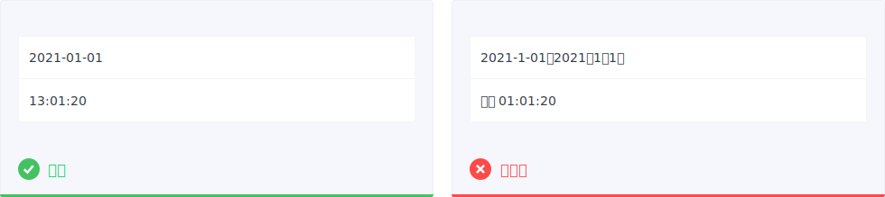
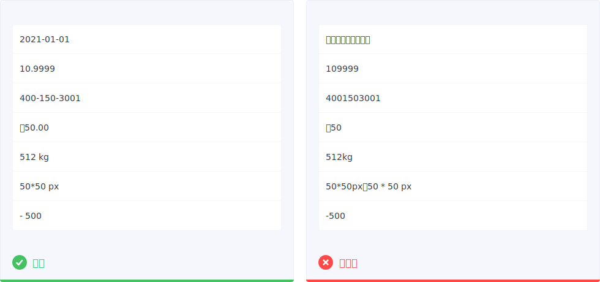
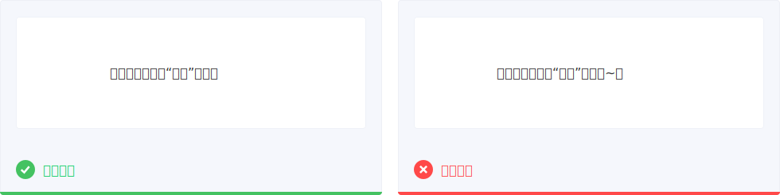

文本策略
文本规范
1.合理使用文字大小、间距、对比等
使用合理的字体大小，太小太大对于屏幕阅读来说都是低效率的。网页端字体大小一般使用不低于12px，更加直观易辨（对于多数人而言）的字体 14px 和 16px；移动端字体大小不小于 10pt（sp），12-18pt（sp）都是常用的字体选择范围。
2.文本的词语尽量避免同行断开
一段文本中，统一词组尽量出现在一行，避免上下行断开。比如跳转，行末为“跳”，下行开头为“转”，读起来就有断句的存在感。
3.符号避开头尾
尤其是中文，标点符号避免在一行的行首，必须要移到前一行的末尾。
4.合理突出
对于一些关键的重要信息，要通过位置、加粗、大小、颜色等方式处理，让用户第一眼就可以直接关注到，但切忌重点过多，会扰乱和分散用户的注意力。若是文本链接，可以统一使用蓝色/下划线的形式标出链接样式。
5.尽量少用斜体
PC和无线端的各个官方的中文字体包并没有斜体预设，生拉硬扯的倾斜在一定程度上是影响美观度，并造成一定的阅读困难。如果是为了突出或区别可以考虑使用着重、大小和颜色等方式。
6.数字信息前后有汉字时需要加空格
数字信息前后有汉字时需要加空格。不加空格会出现前后拥挤的视感，另一方面可凸显数字信息。
7.中英文大小写
产品概念名称缩写一般需使用大写字母，如：BBS、POS；但对于某些概念名称，需使用原有格式，如：SaaS。
专有名词需使用原有格式，如：iOS、iPhone、iPad。
全英文的标题、标签、菜单项等需遵循英文句式中首字母大写的规范。
语句文案中的英语单词不做特殊的大小写处理，如：bug、level。
日期与数字
1.日期与时间
使用完整数字日期，如：2018-01-02。

使用 24 小时制，具体到时分秒，如 13:01:29
日期和时间之间包含一个空格，如 2018-09-01 13:01:20
2.数字
超过4位数或更多数时，使用半角”,”逗号隔开
对手机号码使用前后空格或连字符“-”隔开
储存单位（B、kB、MB、GB、TB），在数量和度量单位之间包含一个空格。
货币符号一般在数字前面，一般精确到小数点2位。
在连续列出尺寸时，将度量单位放在末尾，而不是在每个数字之后，并包括一个空格。
正负数后不加空格

3.数字的脱敏规则
一般情况，隐藏手机号的第 4 位至第 7 位，共 4 位数字，如：135 ** 9865。电话号码由区号和号码组成，区号不脱敏，号码部分保留前 2 位和后 2 位，如 055-5432 123、0555-5432 1234 脱敏为 055-54 *23、0555-54** **34。
标点符号
1.省略不必要的标点符号
标题、副标题、输入框下的提示文本、输入框暂位符、悬停提示中的文本、Toast中、弹窗等短句，在遣词造句时尽量避免标点符号，始终末尾不要使用句点。
不允许使用没有实质意义的聊天式标点，如：“~”等。

2.谨慎使用感叹号
感叹号会让文案显得过于激动，容易让气氛变得过于紧张
3.常用标点符号的使用规范
省略号『…』：半角省略号，超出截断代替省略文本；
星号『*』：半角星号。表单必填、说明备注；
连接号『-』：半角连接号，前后无空格，如2018-01-04，2008-2018；
冒号『:』：半角冒号，用于时间的表示，如16:45 ；
冒号『：』：全角冒号，用于表单；
破折号『——』：中文破折号占两个汉字空间；
书名号『《》』：产品中常用于法律条文。